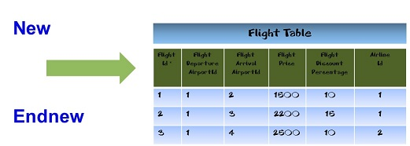

Procedures include a command called New to insert records in a table. Using this command, you can assign values to the attributes of one physical table.  It is a low-level command, used to insert a New Record in a table. Since the New record modifies the database, it is only suitable for the Procedure object, not even for the Transaction object, where the addition is performed differently. Note: Reading the paper "GeneXus and Relational Databases: the Essence" by Breogán Gonda and Nicolás Jodal is highly recommended. Also, if you want to learn more or refresh your knowledge of relational databases (primary key, foreign keys, indexes, referential integrity, etc.) a little distance course called "Fundamentals of Relational Databases" may be interesting for you. ExampleThere is a “Product” Transaction for saving the information related to the products managed in a system, with its corresponding price list. The structure is as follows:
Product
{
ProductId*
ProductDescription
ProductStock
PriceList
{
ProductPriceListDate*
ProductPriceListPrice
}
}
Based on this, GeneXus creates two tables: PRODUCT and PRODUCTPRICELIST, each one corresponding to a level in the structure. The last one, PRODUCTPRICELIST, will have three attributes: ProductId, ProductPriceListDate and ProductPriceListPrice, with Primary Key {ProductId, ProductPriceListDate}. Suppose you want to implement a Procedure object so that the product whose code is received as a parameter adds the new price (also received as a parameter) to its price list, for the date when the procedure is executed. Therefore, within its rules section, the Procedure will include the following: Parm( in: &ProductId, in:&price ); In Source, type the following: New ProductId = &ProductId ProductPriceListDate = &Today ProductPriceListPrice = &price EndNew Note that within the New command there are assignment commands, where each attribute in the table where the record is intended to be inserted is given a value. In this case, you want to add a record in the PRODUCTPRICELIST table. Also, read a detailed explanation of the concepts behind the example. Syntax
New
[Defined by attributeList]
[Blocking NumericExpression]
BodyCode
[When duplicate
{ AnotherCode |
For each
{att = exp}
…
Endfor
| AnotherCode } ]
EndNew
Where: attributeList NumericExpression BodyCode where: When duplicateIt specifies the code to be executed when a duplicate record is detected (when a record with the same primary key or candidate key already exists in the table). Most times, some attributes of that existing record need to be updated. In these cases, a For Each command must be used, and the attributes to be updated are assigned within it. Even though it's not so common, other commands can be executed as well (AnotherCode). Note: If there is a Blocking clause, When Duplicate commands are executed after an attempt to insert the entire block and a duplicate record is found. In this case, an insertion attempt is made for each record in the block; all the records may be successfully inserted, or 'When duplicate' commands may have to be used. See an in-depth explanation of Block (Batch) insertion mechanism. DescriptionThe extended table concept is not used here – the command works by adding a single record in a single physical table, determined by the attributes in the BodyCode together with those in the 'Defined by' clause, if applicable. Duplicate keys are checked in primary and candidate keys. Even if the command has the Blocking clause, it adds a single record in a single table. The blocking clause only improves performance when the New command is inside a repetitive structure, not in a loop. If an assignment to an attribute that doesn't belong to the base table is detected within a New command, an error is shown in the Specification report, and the program is not generated. The New command can be included in other iterative structures, such as Do while, For Each command, For to step, which allow for batch insertions (here, the Blocking clause improves performance). Many New commands can be concatenated one after the other as another way to insert multiple records. Also, New commands can be nested. How does GeneXus determine 'the table' of the New command?Every time GeneXus finds a “new” command, it must identify the table where the records will be inserted. This table is identified based on the attributes in the BodyCode block of the “new” command (not the When Duplicate clause), on the left in an assignment, together with the attributes included in the 'Defined by' clause, if it exists, and it’s referred to as the base table of the "new" command. GeneXus will look for a physical table that contains all these attributes. If this table doesn't exist, an error message describing the issue will be displayed in the navigation report after the procedure specification, and the object will not be generated. Do all attributes of the base table have to be assigned inside the New command?Not necessarily. What happens to a record to be added depends on the context, when the table attributes are not explicitly assigned inside the BodyCode of the New command.
What does context mean?
What happens if the primary key or any candidate key already exist?
When is the insertion performed?It depends on the presence of the 'Blocking clause'. If it doesn't exist, the insertion will be performed at the end of the command (when the Endnew is reached). Otherwise, the actual insertion will be performed at the end of the block. Suppose the New command has a blocking factor N and is inside a repetitive structure (such as a For Each command). Every time the For Each command body is executed (and the New command inside it), the record of the New is not actually inserted, but is added into a memory block (a buffer) of size N. Afterwards, if the buffer is filled, a special insert (of many rows) is sent to the database, in order to insert the entire block. Then, if some of the N records to be added are found duplicated, the special insertion fails, and a one-by-one insertion is done, running through the N block, using the simple insert command. Calling other programs within a New commandIf you call another program within a New command (whether you use Call] or Udp), the call is always executed, even if the key already existed. Example New A = 1 B = 1 Calculation.call() //The call method can be omitted. You can write: Calculation() When Duplicate For each B = 2 Endfor EndNew The “Calculation” Procedure is always called even if the key of the record to be inserted already existed in the table and the call is placed before the When duplicate clause. This behavior occurs because the Call command can be used to fetch some values to assign to the attributes. Notes
ScopeObjects Procedure object See alsoWhen duplicate clause
|